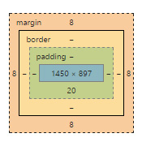

There are several units of size that can be used in CSS. They can be used to change the size of elements as well as fonts. We will focus on a few of the most commonly used units:
The box model is a representation of the areas surrounding the content of an HTML element. These areas can be transformed using CSS.
The box model for an element can be viewed in Google Chrome using the inspector (right-click Inspect or CTRL/CMD + SHIFT + I)
float
* Note that using float to create columns is out of style and there are better methods which we will cover next lesson.
position
display
display properties
Inline element displayed as Block
Simple Horizontal List Navigation Bar
Semantic elements are supported in modern browsers so that the browser understands what the meaning of the content is.
In HTML 5, several new elements were added to define the parts of a page. They provide better clarity than using a div.
This article provides examples and descriptions of these elements.
Codepen Examples
We will learn about web design principles and best practices for creating sites that are visually appealing and have intuitive navigation.
For next week's class, bring an example of a website that you use all the time. What makes this site useful to you? What do you like and dislike about its design?
Bring an example of a website that you find visually appealing. What makes it so?
Continue working on your website using the Semantic Layout template provided on CodePen. Your page should contain: